I implemented a channel vocoder which can use a sine wave or white noise as the carrier. I experimented with the vocoder to identify the minimum number of bands necessary for a vocoded signal to be understandable.
I also implemented a sound chimaerizer which combines two sound signals together to make a hybrid chimaera sound.
This is a brief explanation of how the code is organized.
vocode.m and chimera.m are the vocoder and chimaerizer respectively. vocode_run and chimera_run are helper functions to ease the use of the vocoder and chimaerizer.
audioread_mono.m loads an sound file as a mono channel audio signal. bands_cutoff.m generates the frequency ranges for the bands. plots.m generates plots. demo.m is a short demo of the code.
Please unzip the project and run demo.m.
% Youssef Beltagy
% BEE235A, Aut 2021, Vocoder Project
% demo.m - Project Demo
"Sine Vocoder Demo"
% Runs the vocoder on the first sentence using 8 bands and
% a sine carrier wave.
vocode_run(1,"both",8,"sine");
"White Noise Vocoder Demo"
% Runs the vocoder on the first sentence using 8 bands and
% a white noise carrier wave.
vocode_run(1,"both",8,"noise");
"Chimera without Swapping Demo"
% Runs the chimera function with the first and second sentences
% using 8 bands and without swapping the TCF/ENV between
% the two signals for different bands.
chimera_run(1,2,"both",8,"no-swap");
"Chimera with Swapping Demo"
% Runs the chimera function with the first and second sentences
% using 8 bands and swaps the TCF/ENV between the two signals
% for different bands.
chimera_run(1,2,"both",8,"swap");
"Musical Chimera without Swapping Demo"
% Runs the chimera function with the first sentence and music
% using 8 bands and without swapping the TCF/ENV between
% the two signals for different bands.
chimera_run(1,27,"chimera",8,"no-swap");
"Musical Chimera with Swapping Demo"
% Runs the chimera function with the first sentence and music
% using 8 bands and swaps the TCF/ENV between the two signals
% for different bands.
chimera_run(1,27,"chimera",8,"swap");The vocoder splits the signal into frequency bands. It then extracts the envelope of each band and multiplies the envelope with a sine wave in the middle of the band. The output signal is the summation of those bands.
This is the output from the 4-band sine vocoder for “The fire is very hot" (sentence 7). It is similar to the input but it is more symmetric across the x-axis.
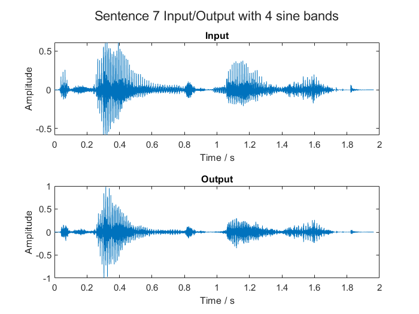
These are the envelopes used to generate the output.
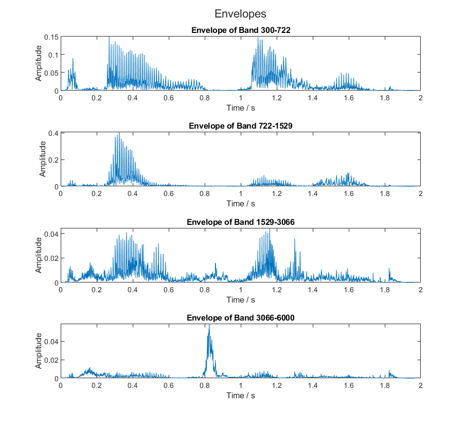
The below four images show the four bands generated when the vocoder is used on “The fire is very hot" with 4 frequency bands. They show the everything starting from the original signal spectrum, to the band pass filter used, to the envelope of the band, and to band itself.
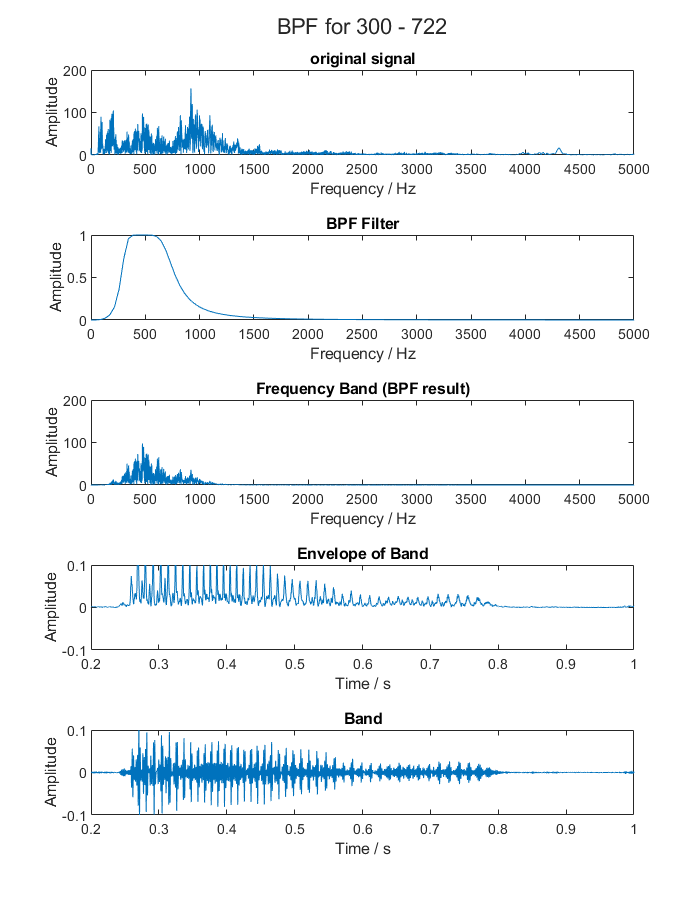
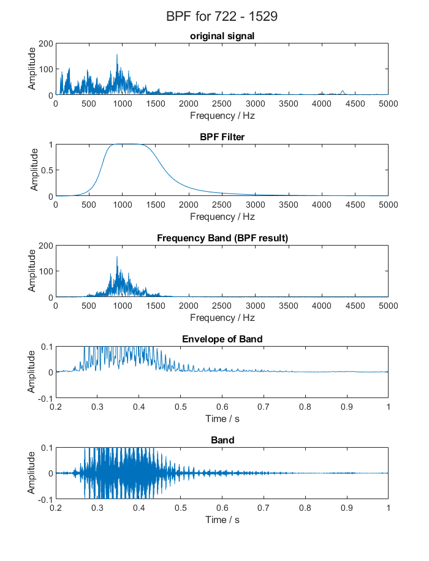
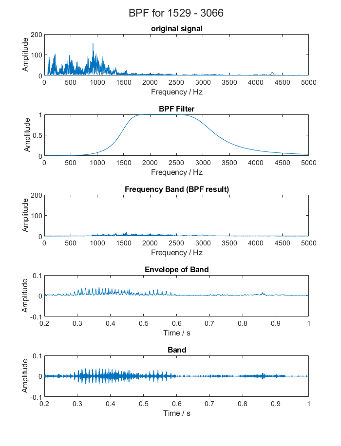
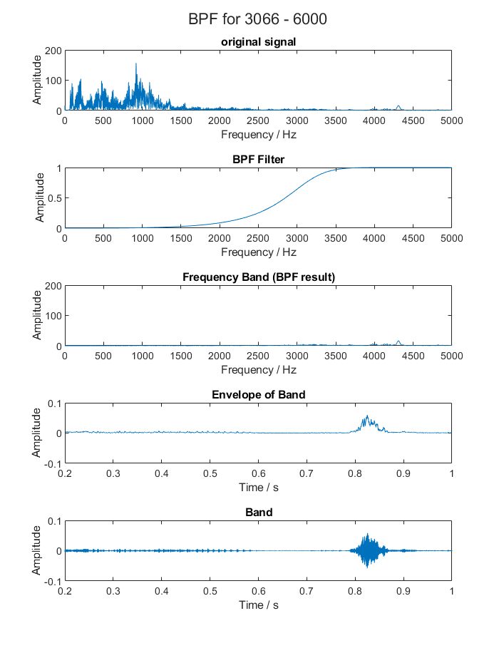
To generate the envelopes, I use this low pass filter.
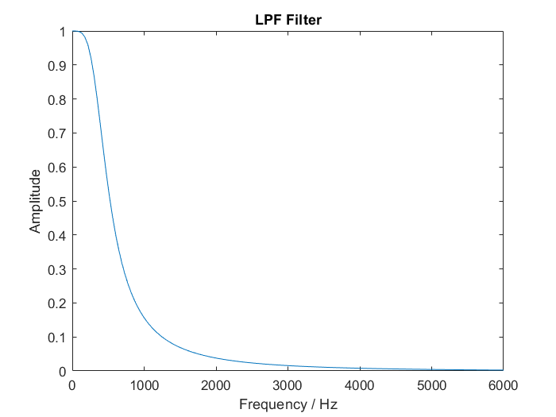
I implemented the white noise vocoder. It is redundant to regenerate the previous plots for the noise vocoder, so let’s jump to the spectrum analysis.
This is the original signal spectrum.
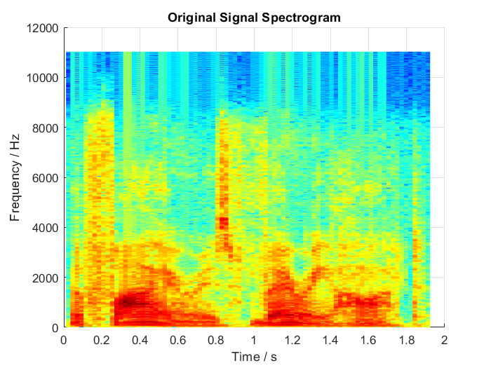
The following two plots are the spectrograms of a 1-band and a 4-band sine vocoder, respectively.
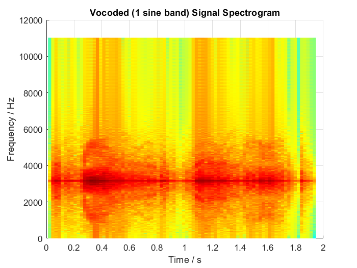
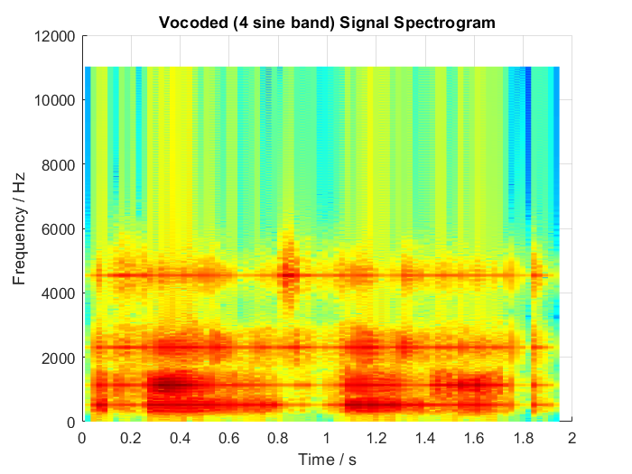
These last two plots are the spectrograms of a 1-band and a 4-band noise vocoder, respectively.
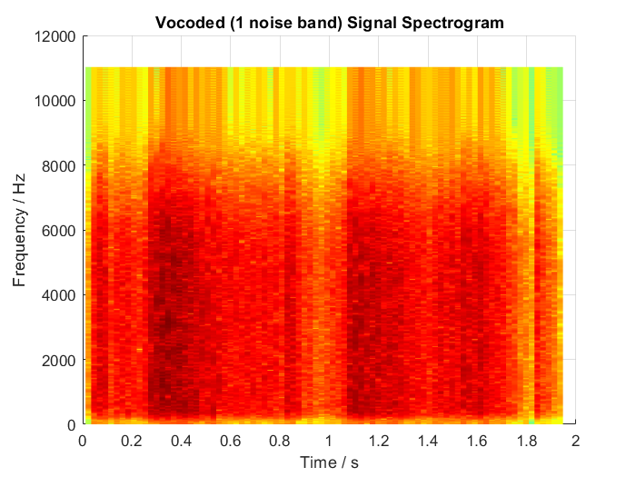
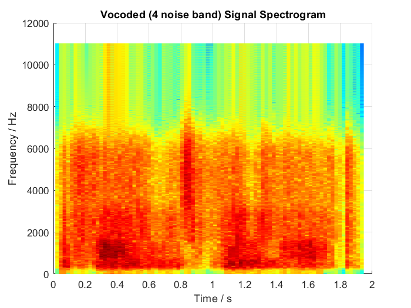
The sine vocoder has sharp horizontal lines for the sine of every band. The noise vocoder’s spectrum is much more uniform than the sine vocoder and looks more similar to the original signal spectrum.
I asked two listeners to listen to sine vocoded sentences and tell me the words they understood. Since we were only provided with 15 sentences, I made more sentences with audacity. They are open source and you can use them in future assignments.
The listeners started understanding the speech when the number of bands was 4. But they felt very uncomfortable with 4 bands. They preferred 7-10 bands.
When the number of bands was in the hundreds (300 for example), the listeners didn’t understand the speech at all.
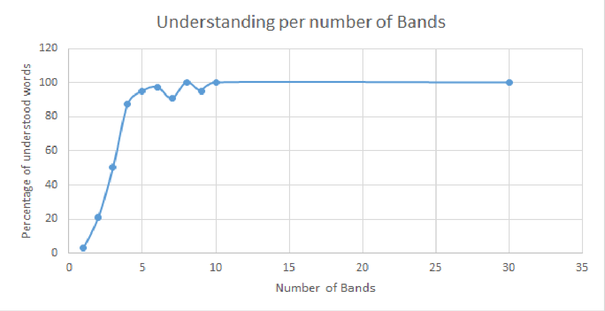
I implemented two versions of the chimaerizer: One consistently uses one signal as the carrier and the other as the envelope. The other swaps the envelope and carrier between the two signals for every band.
Let’s begin with the chimaerizer which doesn’t swap. If the two signals are the same, the output sounds just like the input.
If the two signals are different, but the number of bands is small (1-2), the envelope is always more prominent than the carrier. But as the number of bands increases, the carrier becomes more prominent. When the number of bands is around 3-4, the two sounds are mixed together and hard to understand.
When I played speech envelope with sound carrier, it sounded as if background music was added to vocoded speech.
As for the chimaerizer which swaps, for a small number of bands, the two signals mixed and were hard to discern. When the number of bands is larger, one signal seems to consistently win over the other. I can then understand the winning signal.
Some signals keep switching between winning and losing. In these cases, it sounded like two people are saying a sentence in turns (like the witches in Hercules) and I confuse some words from one sentence with the other
When I played a sentence with music, it sounded like someone synthesizing speech from music.
When I played two music signals together, it sounded like I was switching back and forth between two tracks.
I implemented a sine vocoder and a white noise vocoder. Humans need at least 4 frequency bands to understand speech. White noise vocoders are easier to understand than sine wave vocoders.
A chimaerizer mixes two sound signals together using one as an envelope and the other as the carrier. Chimaerizers make sounds which feel as if two people were talking at the same time.
I attached the code in my submission, but I will include it here too for ease of reference.
% Youssef Beltagy
% BEE235A, Aut 2021, Vocoder Project
% bands_cutoff.m - Generates
% frequency cutoffs for N bands.
% The bands increase in size exponentially.
function fco=bands_cutoff(fmin, fmax, N)
xmin = log10(fmin/165.4+1)/2.1;
xmax = log10(fmax/165.4+1)/2.1; %relative value
dx = (xmax-xmin)/N;
x = xmin:dx:xmax;
fco=zeros(1,N+1);
for i=1:N+1
fco(i)=165.4*(10^(x(i)*2.1)-1);
end
end% Youssef Beltagy
% BEE235A, Aut 2021, Vocoder Project
% vocode.m - The vocoder.
% arguments
% ss(:,:); % input sound signal
% Fs(1,1); % signal sampling frequency
% num_bands(1,1) = 8; % number of input bands
% mode(1,1) = "sine"; % whether to use a sine wave
% % or white noise as the carrier.
% % mode: sine, noise
% fmin(1,1) = 300; % minimum frequency to use in the bands.
% fmax(1,1) = 6000; % maximum frequency to use in the bands.
function os = vocode(ss, Fs, num_bands, mode, fmin, fmax)
arguments
ss(:,:); % input sound signal
Fs(1,1); % signal sampling frequency
num_bands(1,1) = 8; % number of input bands
mode(1,1) = "sine"; % whether to use a sine wave
% or white noise as the carrier.
% mode: sine, noise
fmin(1,1) = 300; % minimum frequency to use in the bands.
fmax(1,1) = 6000; % maximum frequency to use in the bands.
end
SIZE = size(ss);
if SIZE(1) > 1
ss = ss';
end
N = length(ss);
t = ( 0:(N - 1) ) ./ Fs;
% Low Pass Filter to make envelope
[lpf_bb,lpf_aa]=butter(2,400/(Fs/2));
cutoffs = bands_cutoff(fmin, fmax, num_bands);
os = zeros(1, N); % output signal
for i=1:num_bands
% Band Pass Filter
[bpf_bb,bpf_aa]=butter(3,[cutoffs(i) cutoffs(i+1)] ./ (Fs/2));
% Get Band
band = filter(bpf_bb, bpf_aa, ss);
%Generate Envelope
envelope = abs(band);
envelope = filter(lpf_bb, lpf_aa, envelope);
band = generate_carrier(mode, cutoffs(i), cutoffs(i + 1), bpf_bb, bpf_aa, t);
band = band .* envelope;
band = filter(bpf_bb, bpf_aa, band);% pass band through BPF again
os = os + band;
end
os = os ./ max(abs(os)); %normalize
if SIZE(1) > 1
os = os';
end
end
function carrier=generate_carrier(mode, fmin, fmax, bpf_bb, bpf_aa, t)
if (strcmp(mode,"noise"))
carrier = -1 + 2 .* rand(size(t));
carrier = filter(bpf_bb, bpf_aa, carrier);
else
carrier = sin(pi .* (fmin + fmax) .* t );
end
end% Youssef Beltagy
% BEE235A, Aut 2021, Vocoder Project
% chimera.m - The chimera function
%arguments
% input_sig1(:,:); % first input signal
% input_Fs1(1,1); % sampling frequency of first input signal
% input_sig2(:,:); % second input signal
% input_Fs2(1,1); % sampling frequency of second input signal
% num_bands(1,1) = 8; % number of bands to use
% mode(1,1) = "no-swap"; % specifies whether to flip between the
% two signals or not. mode: swap, no-swap
% fmin(1,1) = 300; % minimum frequency to use in bands
% fmax(1,1) = 6000; % maximum frequency to use in bands
function [os, Fs] = chimera(input_sig1, input_Fs1, input_sig2, ...
input_Fs2, num_bands, mode, fmin, fmax)
arguments
input_sig1(:,:); % first input signal
input_Fs1(1,1); % sampling frequency of first input signal
input_sig2(:,:); % seconds input signal
input_Fs2(1,1); % sampling frequency of second input signal
num_bands(1,1) = 8; % number of bands to use
mode(1,1) = "no-swap"; % specifies whether to flip between the two signals or not.
% mode: swap, no-swap
fmin(1,1) = 300; % minimum frequency to use in bands
fmax(1,1) = 6000; % maximum frequency to use in bands
end
[sig1, sig2, Fs, N] = ...
normalize_sampling_and_length(input_sig1, input_Fs1, ...
input_sig2, input_Fs2);
cutoffs = bands_cutoff(fmin, fmax, num_bands);
os = zeros(1, N); % output signal
for i=1:num_bands
% band pass filter
[bpf_bb,bpf_aa] = butter(3,[cutoffs(i) cutoffs(i+1)] ./ (Fs/2));
% envelope and carrier for first signal
sig1_band = filter(bpf_bb, bpf_aa, sig1);
[sig1_env, sig1_tfs] = get_env_tfs(sig1_band);
% envelope and carrier for second signal
sig2_band = filter(bpf_bb, bpf_aa, sig2);%
[sig2_env, sig2_tfs] = get_env_tfs(sig2_band);
% if the mode is swapping, swap carrier and envelope every band.
% if not, just use the envelope of the first signal and the carrier of
% the second signal.
if(strcmp(mode,"swap"))
if(mod(i,2) == 1)
os = os + sig1_env .* sig2_tfs;
else
os = os + sig2_env .* sig1_tfs;
end
else
os = os + sig1_env .* sig2_tfs;
end
end
os = os ./ max(abs(os)); %normalize
end
function [os_1, os_2, Fs, N] = normalize_sampling_and_length(ss1, Fs1, ss2, Fs2)
% normalize to the lower frequency
if Fs1 > Fs2
Fs = Fs2;
os_1 = resample(ss1, Fs2, Fs1);
os_2 = ss2;
elseif Fs2 > Fs1
Fs = Fs1;
os_1 = ss1;
os_2 = resample(ss2,Fs1,Fs2);
else
Fs = Fs1;
os_1 = ss1;
os_2 = ss2;
end
% convert to row vectors
temp = size(os_1);
if(temp(1) > 1)
os_1 = os_1';
end
temp = size(os_2);
if(temp(1) > 1)
os_2 = os_2';
end
% normalize the vector sizes.
N = length(os_1);
N2 = length(os_2);
if N2 < N
N = N2;
end
os_1 = os_1(:,1:N);
os_2 = os_2(:,1:N);
end
function [env,tfs] = get_env_tfs(ss)
temp = hilbert(ss); % x: vector of an audio signal. To form an analytical signal (complex)
env = abs(temp); % envelope extraction ENV
inst_phase = unwrap(angle(temp)); % instantaneous phase
%Regenerate the carrier from the instantaneous phase
tfs = cos(inst_phase); % temporal fine structure TFS
end% Youssef Beltagy
% BEE235A, Aut 2021, Vocoder Project
% audioread_mono - loads a file
% as a monochannel sound signal
% arguments
% i(1:1); % the index of the sentence
function [ss,Fs] = audioread_mono(i)
[ss, Fs] = audioread(sprintf('sounds/sent%03d.wav',i));
SIZE = size(ss);
if(SIZE(2) > 1)
ss = (ss(:,1) + ss(:,2)) ./ 2;
end
end% Youssef Beltagy
% BEE235A, Aut 2021, Vocoder Project
% vocode_run.m - A helper function
% to easily load sounds and run the vocoder.
% arguments
% i(1,1) int8 = 0; % the index of sound to use
% mode(1,1) string = "both"; % the running mode: original, vocode, both, reverse
% num_bands(1,1) = 8; % Vocoder number of bands
% vocode_mode(1,1) string = "sine"; % the vocoder mode: sine, noise
% examples
% vocode_run() % runs all 25 sounds and plays both original and vocoded
% signal
% vocode_run(0) same as above
% vocode_run(i) runs the sentence number i. i must be in range [1,27]
% vocode_run(i,mode) mode chooses whether you play just the original
% signal, just the vocoded signal, both, or both in
% reverse order.
% vocode_run(i, mode, num_bands, vocode_mode) num_bands and vocode_mode
% specify different running modes for the vocoder.
% num_bands decides the number of bands of the
% vocoder.
% vocode_mode decides whether the vocoder uses a sine
% wave or white noise.
function vocode_run(i, mode, num_bands, vocode_mode)
arguments
i(1,1) int8 = 0; % the index of sound to use
mode(1,1) string = "both"; % the running mode: original, vocode, both, reverse
num_bands(1,1) = 8; % Vocoder number of bands
vocode_mode(1,1) string = "sine"; % the vocoder mode: sine, noise
end
% Choose Mode
% defualt is to play both original and vocoded sound
play = @play_sound;
if(strcmp(mode,'original'))
play = @play_original;
elseif(strcmp(mode,'vocode'))
play = @play_vocode;
elseif(strcmp(mode,'reverse'))
play = @play_sound_rev;
end
% Play Sound
if i == 0
for n=1:25
[ss,Fs] = audioread_mono(n);
play(ss, Fs, num_bands);
end
elseif i > 0 && i <= 27
[ss, Fs] = audioread_mono(i);
play(ss, Fs, num_bands, vocode_mode);
end
end
function play_original(ss, Fs, ~, ~)
sound(ss,Fs);
pause(length(ss)/Fs + 0.5);
end
function play_vocode(ss, Fs, num_bands, vocode_mode)
sound(vocode(ss, Fs, num_bands, vocode_mode), Fs);
pause(length(ss)/Fs + 0.5);
end
function play_sound(ss, Fs, num_bands, vocode_mode)
play_original(ss, Fs, num_bands, vocode_mode);
play_vocode(ss, Fs, num_bands, vocode_mode);
end
function play_sound_rev(ss, Fs, num_bands, vocode_mode)
play_vocode(ss,Fs, num_bands, vocode_mode);
play_original(ss,Fs, num_bands, vocode_mode);
end% Youssef Beltagy
% BEE235A, Aut 2021, Vocoder Project
% chimera_run.m - A helper function
% to easily load sounds and run the chimera.
%arguments
% i(1,1) int8 = 0; % the index of first sound to use
% j(1,1) int8 = 1; % the index of the second sound to use
% mode(1,1) string = "both"; % the running mode: original, chimera, both, reverse
% num_bands(1,1) = 8; % chimera number of bands
% chimera_mode(1,1) string = "no-swap"; % the chimera mode: swap, no-swap
%examples
% chimera_run() % runs all 25 sounds and plays both original signals and
% the chimera signal.
% chimera_run(0) same as above
% chimera_run(i,j) runs the chimera with sentences i and j which have to
% be in the range [1,27];
% chimera_run(i, j, mode) mode chooses whether you play just the original
% signals, just the chimera signal, all signals,
% or the original and chimera signals in reverse order.
% chimera_run(i, j, mode, num_bands, chimera_mode) num_bands and chimera_mode
% specify different running modes for the chimera.
% num_bands decides the number of bands of the
% chimera.
% chimera_mode decides whether the chimera flips
% between the signals or not.
function chimera_run(i, j, mode, num_bands, chimera_mode)
arguments
i(1,1) int8 = 0; % the index of first sound to use
j(1,1) int8 = 1; % the index of the second sound to use
mode(1,1) string = "both"; % the running mode: original, chimera, both, reverse
num_bands(1,1) = 8; % chimera number of bands
chimera_mode(1,1) string = "no-swap"; % the chimera mode: swap, no-swap
end
% Choose Mode
% defualt is to play both original and vocoded sound
play = @play_sound;
if(strcmp(mode,'original'))
play = @play_original;
elseif(strcmp(mode,'chimera'))
play = @play_chimera;
elseif(strcmp(mode,'reverse'))
play = @play_sound_rev;
end
if (j > 27 || j < 1)
return
end
[sig2,Fs2] = audioread_mono(j);
% Play Sound
if i == 0
for n=1:25
[sig1,Fs1] = audioread_mono(n);
play(sig1, Fs1, sig2, Fs2, num_bands, chimera_mode);
end
elseif i > 0 && i <= 27
[sig1,Fs1] = audioread_mono(i);
play(sig1, Fs1, sig2, Fs2, num_bands, chimera_mode);
end
end
function play_original(sig1, Fs1, sig2, Fs2, ~, ~)
sound(sig1,Fs1);
pause(length(sig1)/Fs1 + 0.5);
sound(sig2,Fs2);
pause(length(sig2)/Fs2 + 0.5);
end
function play_chimera(sig1, Fs1, sig2, Fs2, num_bands, chimera_mode)
[os,Fs] = chimera(sig1, Fs1, sig2, Fs2, num_bands, chimera_mode);
sound(os, Fs);
pause(length(os)/Fs + 0.5);
end
function play_sound(sig1, Fs1, sig2, Fs2, num_bands, chimera_mode)
play_original(sig1, Fs1, sig2, Fs2, num_bands, chimera_mode);
play_chimera(sig1, Fs1, sig2, Fs2, num_bands, chimera_mode);
end
function play_sound_rev(sig1, Fs1, sig2, Fs2, num_bands, chimera_mode)
play_chimera(sig1, Fs1, sig2, Fs2, num_bands, chimera_mode);
play_original(sig1, Fs1, sig2, Fs2, num_bands, chimera_mode);
end% Youssef Beltagy
% BEE235A, Aut 2021, Vocoder Project
% plots.m - Generates plots
[ss, Fs] = audioread("sounds/sent007.wav");
make_spectrogram(ss,Fs,"Original Signal Spectrogram");
os = vocode(ss,Fs,1);
make_spectrogram(os,Fs,"Vocoded (1 sine band) Signal Spectrogram");
os = vocode(ss,Fs,4);
make_spectrogram(os,Fs,"Vocoded (4 sine band) Signal Spectrogram");
plot_input_output(ss, os, Fs);
os = vocode(ss,Fs,1, "noise");
make_spectrogram(os,Fs,"Vocoded (1 noise band) Signal Spectrogram");
os = vocode(ss,Fs,4, "noise");
make_spectrogram(os,Fs,"Vocoded (4 noise band) Signal Spectrogram");
plot_lpf(Fs);
function make_spectrogram(ss,Fs,plot_title)
figure();
[s, f, t] = spectrogram(ss, hamming(512), 4, 1024, Fs);
surf(t, f, 20*log10(abs(s)), 'EdgeColor', 'none');
colormap(jet);
view(0,90);
title(plot_title);
xlabel("Time / s");
ylabel("Frequency / Hz");
end
function plot_lpf(Fs)
figure()
[bb,aa]=butter(2,400/(Fs/2));
[H,F]=freqz(bb,aa,256,Fs);
plot(F,abs(H));
title("LPF Filter");
ylabel("Amplitude");
xlabel("Frequency / Hz");
xlim([0 6000]);
ylim([0,1]);
end
function plot_input_output(ss, os, Fs)
t = (0:(length(ss) - 1)) ./ Fs;
figure();
layout = tiledlayout(2,1);
title(layout, "Sentence 7 Input/Output with 4 sine bands");
nexttile;
plot(t, ss)
title("Input");
ylabel("Amplitude");
xlabel("Time / s");
nexttile;
plot(t, os)
title("Output");
ylabel("Amplitude");
xlabel("Time / s");
end